上游 task-chat 已登记不迁移，此图仅为结构参考


上游为 backlog/看板结构参考，非同页对比


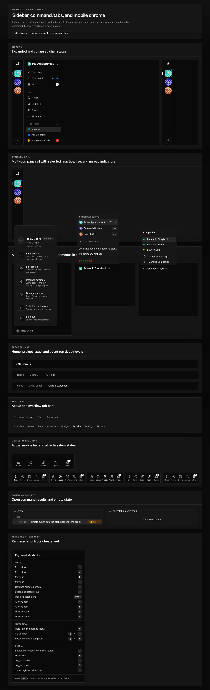

上游无同页截图，此图仅为整体结构参考


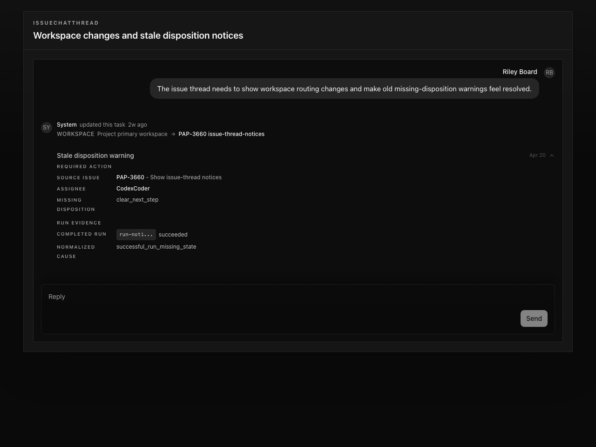


Staple 截图：1440×900（Playwright headless）；上游截图：来自参考镜像 gqf2008/paperclip（PR 截图/设计资产），标注「结构参考」的仅用于整体结构对照、非同页对比。详细量化对比见 ui-pixel-baseline.md。
| 页面 | Staple（实测） | 上游（参考） |
|---|---|---|
| Agents | | —（上游无同页截图，规格对比见基线文档 §3–§4） |
| Approvals | | —（上游无同页截图，规格对比见基线文档 §3–§4） |
| Board chat 上游 task-chat 已登记不迁移，此图仅为结构参考 | | |
| Board (kanban) 上游为 backlog/看板结构参考，非同页对比 | | |
| Company /companies/{id} | |  |
| Costs | | —（上游无同页截图，规格对比见基线文档 §3–§4） |
| Dashboard 上游无同页截图，此图仅为整体结构参考 | | |
| Decisions | | —（上游无同页截图，规格对比见基线文档 §3–§4） |
| Home / | | |
| Inbox | | |
| Issue detail | |  |
| Issues list | | |
| My issues | | —（上游无同页截图，规格对比见基线文档 §3–§4） |
| Pipelines | | —（上游无同页截图，规格对比见基线文档 §3–§4） |
| Review queue | | —（上游无同页截图，规格对比见基线文档 §3–§4） |
| Routines | | —（上游无同页截图，规格对比见基线文档 §3–§4） |
| Settings | | —（上游无同页截图，规格对比见基线文档 §3–§4） |
| Skills | | —（上游无同页截图，规格对比见基线文档 §3–§4） |
| What needs me | | —（上游无同页截图，规格对比见基线文档 §3–§4） |
来源：/Volumes/Workspace/GitHub/paperclip/ui 的 Storybook v10.5.5（pnpm storybook，http://localhost:6006），Playwright headless 截图。
浅色（globals=theme:light）为主集，与 Staple 浅色页面并排；上游默认运行时为深色主题，补充集见 upstream-runtime/dark/。
逐项差异与实测 token/组件规格见 2026-08-07-upstream-runtime-shots.md。
| 组件/页面 | 来源 Storybook story | 上游（运行时实测） |
|---|---|---|
| 侧栏/导航布局（SidebarShell 展开/折叠） | product-navigation-layout--board-chrome-matrix | 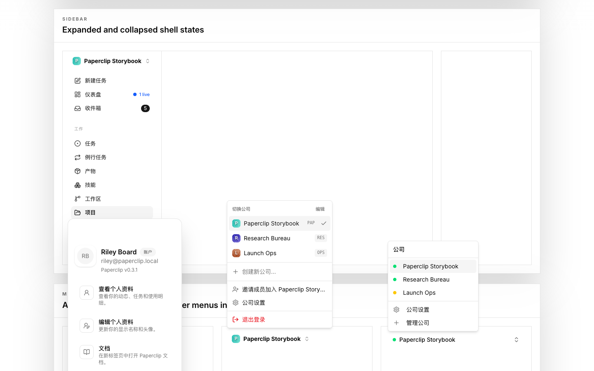 |
| 侧栏图标对齐 | product-navigation-layout--sidebar-icon-alignment | 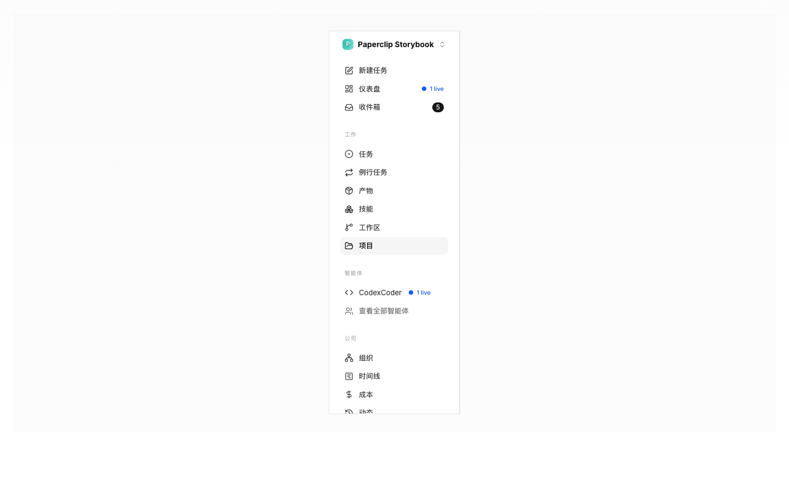 |
| Button（全部 variant/尺寸） | foundations-primitive-matrix--all-primitives | 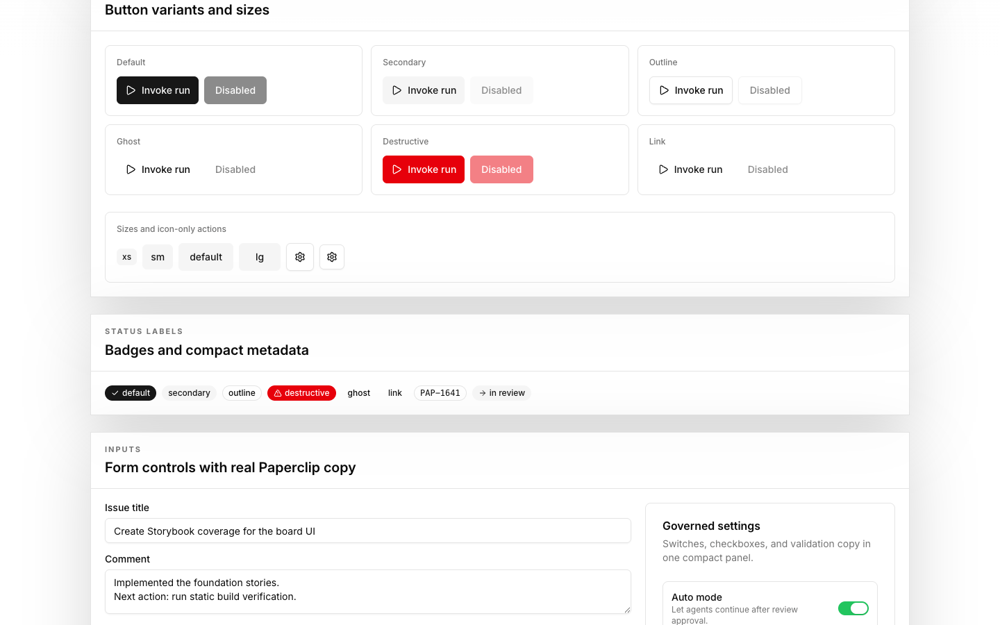 |
| Badge（全部 variant/状态徽标） | foundations-primitive-matrix--all-primitives | 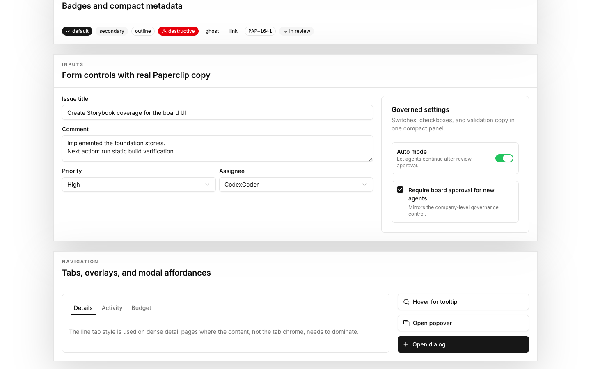 |
| Card（bg-card 面板） | paperclip-assigned-backlog-safeguards--overview | 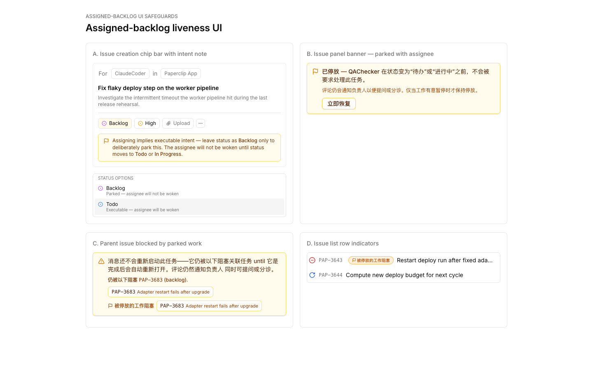 |
| Board 列与卡（KanbanBoard） | paperclip-successful-run-handoff--issue-card-indicator | 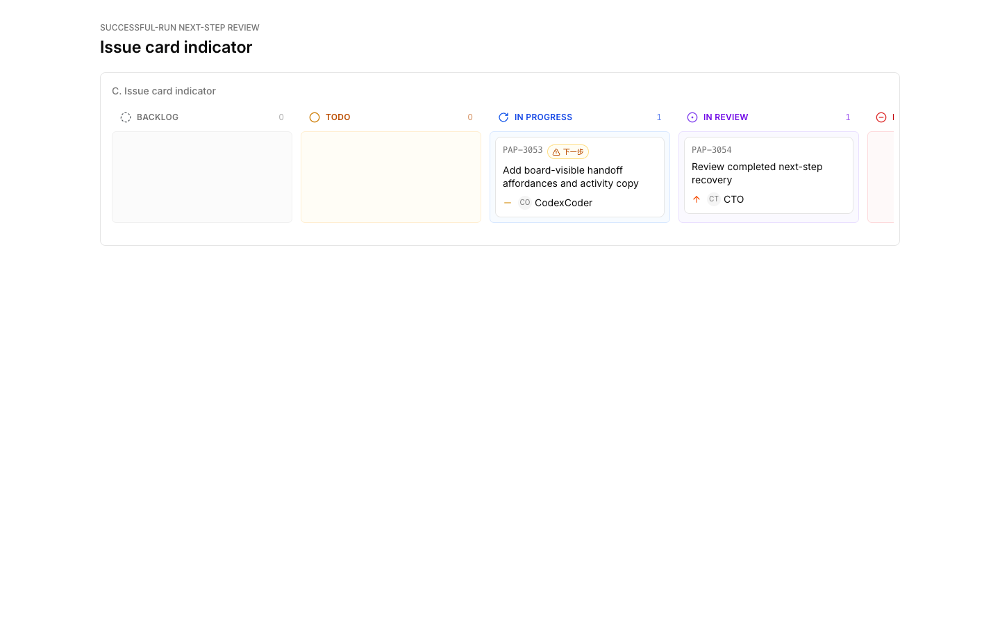 |
| Issue 列表行（IssuesList） | product-issue-management--full-surface-matrix | 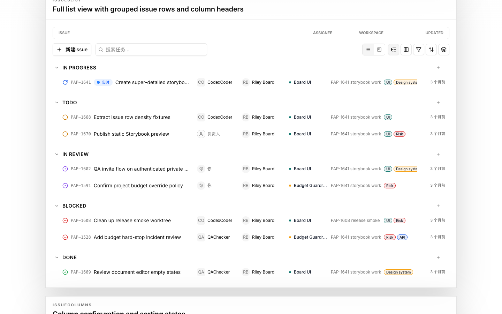 |
| Issue 列配置/分组（IssueColumns） | product-issue-management--full-surface-matrix | 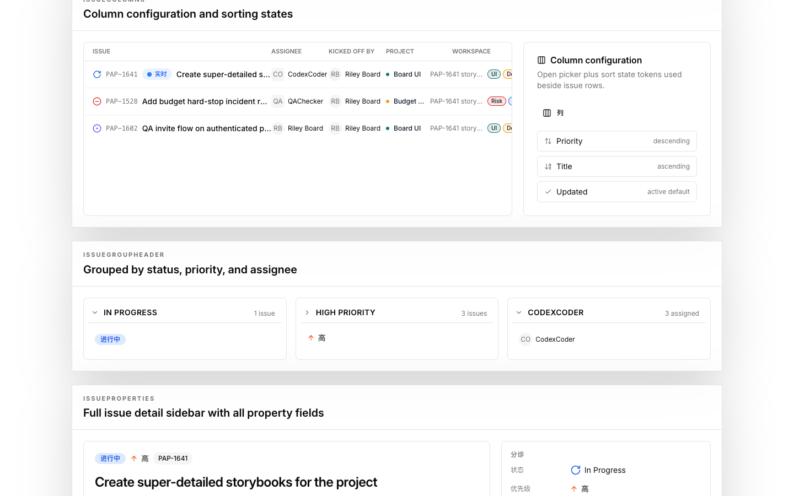 |
| Issue 详情属性面板（IssueProperties） | product-issue-management--issue-properties-long-values-desktop | 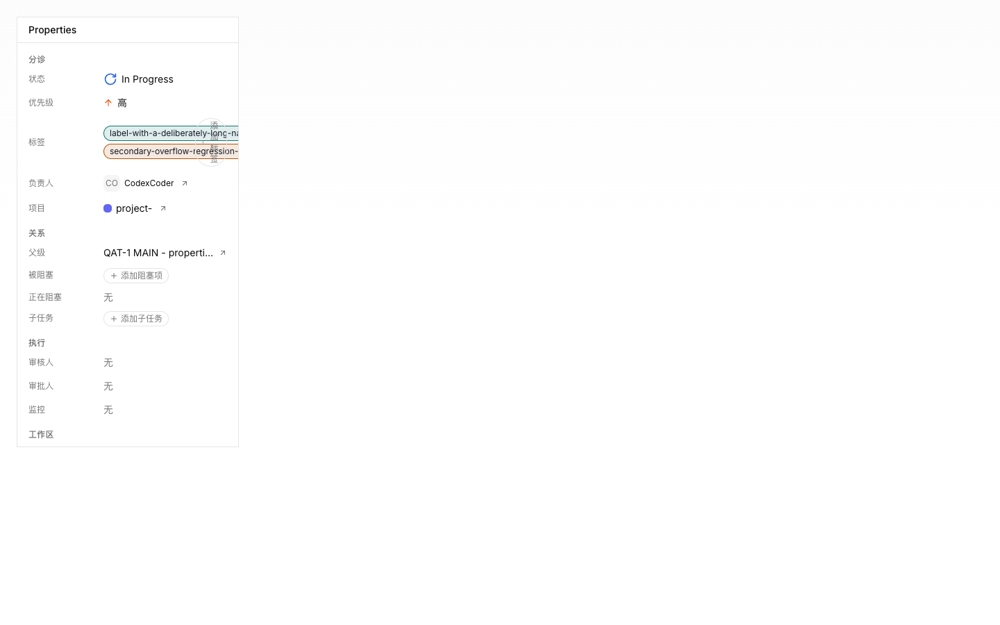 |
| Issue 线程/聊天时间线 | product-chat-comments--issue-chat-with-timeline | 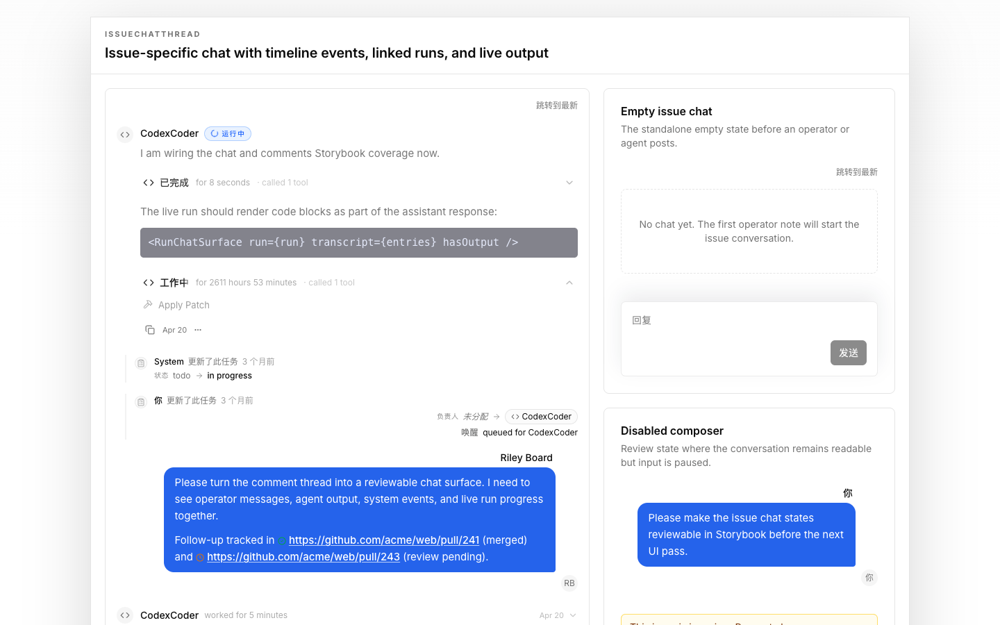 |
| CommandPalette（cmdk 内联） | foundations-primitive-coverage--command-palette-inline | 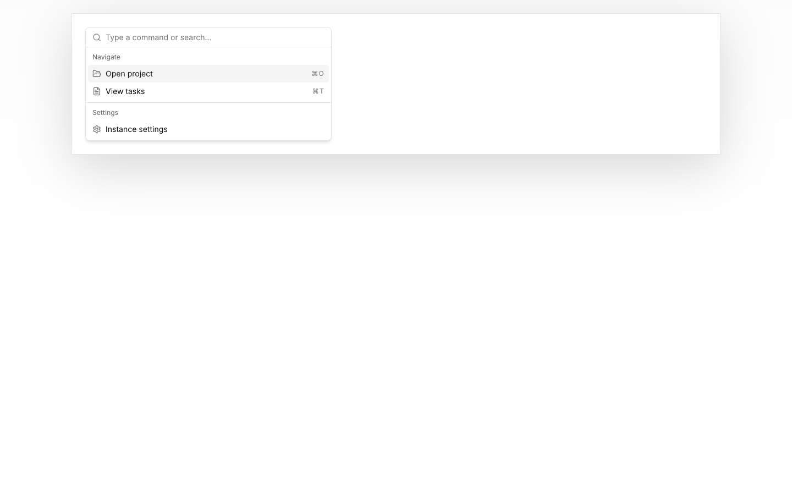 |
| Cmd+K / 搜索（Search & Command K） | product-search-command-k--search-surfaces | 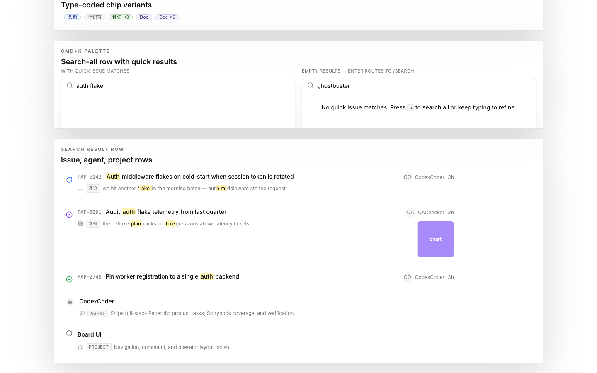 |
| Inbox 行（未读/选中/阻塞/评审） | product-control-plane-surfaces--board-state-matrix | 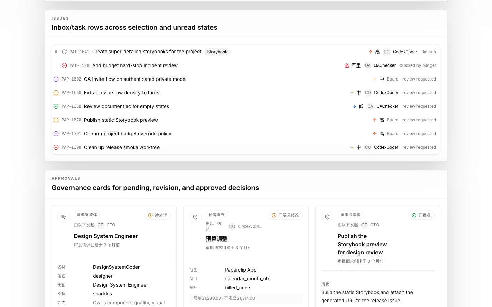 |
| ApprovalCard 治理卡 | product-control-plane-surfaces--board-state-matrix | 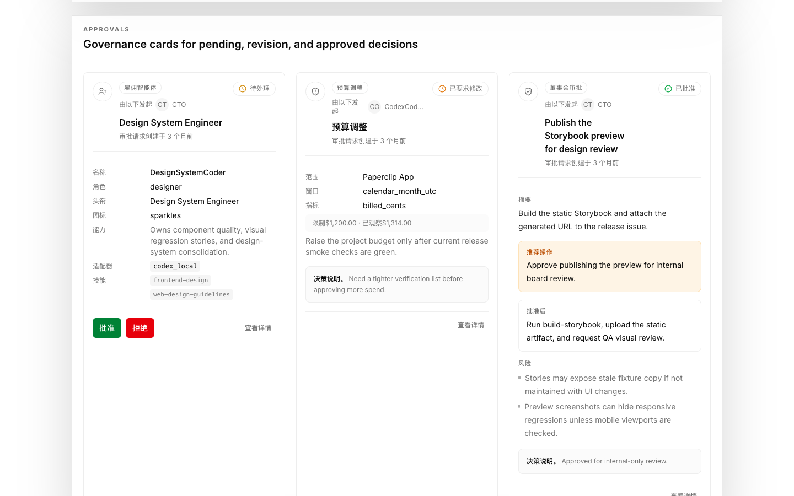 |
| BudgetPolicyCard（healthy/warning/hard-stop） | product-control-plane-surfaces--board-state-matrix | 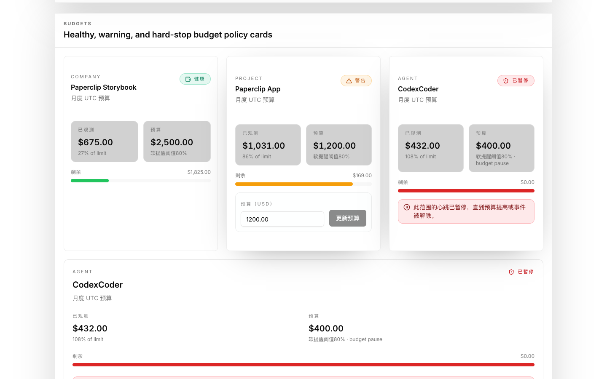 |
| Inbox Blocked 空态 | product-inbox-blocked-tab--desktop-loaded | 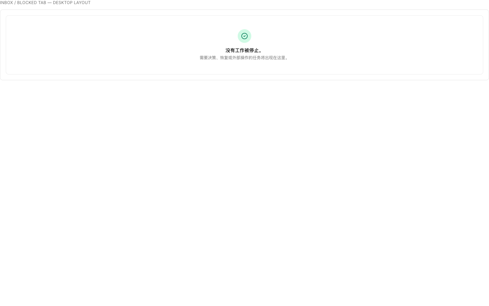 |